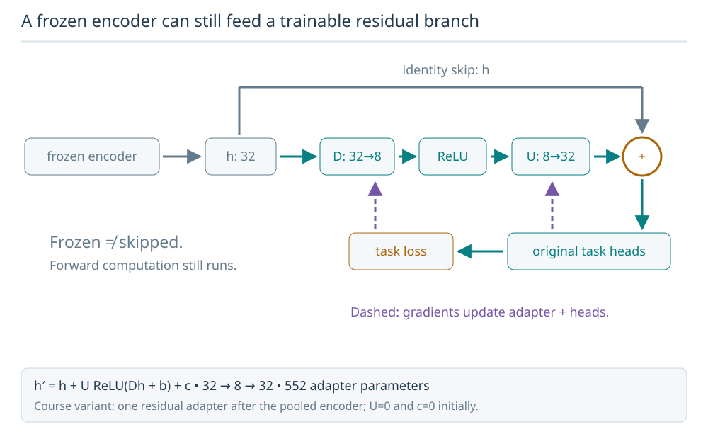
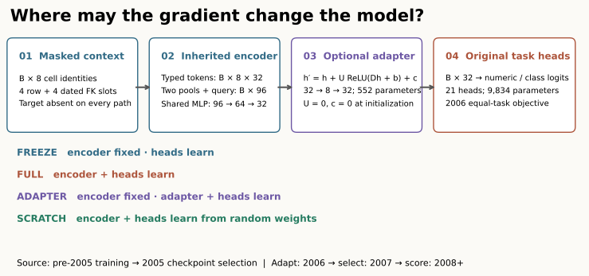
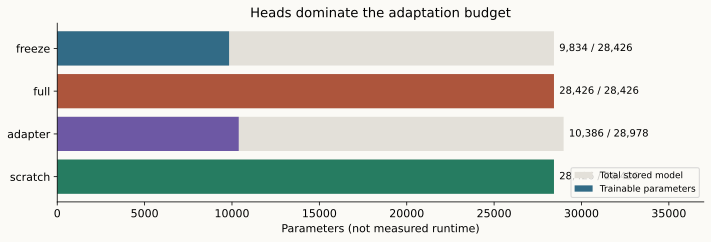
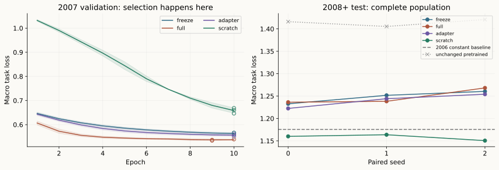

Year 5 · Quarter 2 · Lesson 174
Fine-tuning protocol
One win: choose which parameters may change, prove your optimizer obeys that choice, and assess whether a pretrained start actually helps. About 20 minutes; run the lab separately.
171: choose the corpus → 172: encode cells → 173: pretrain → 174: adapt and compare.
1 · A checkpoint is a starting point, not a promise¶
Lesson 173 trained one encoder across 21 masked-cell tasks. Every trained run had worse aggregate test loss than its constant baseline. We therefore begin with an open question: when later labels arrive, does preserving this representation help, constrain, or hinder learning? Fine-tuning means updating a pretrained model using an adaptation objective. Its successful execution is not evidence that pretraining was useful.
Our model predicts a hidden field from up to four same-row cells and four dated foreign-key-parent cells. Other fields can describe an already completed race. We continue this autocomplete task; we do not turn it into future-race forecasting by calling the later years “test.” The target identity stays absent from every context path.
2 · Draw the update boundary before creating the optimizer¶
A representation h is the 32-wide output of the shared encoder. A task-specific head converts it to one numeric prediction or a vector of category logits. Different adaptation policies permit different changes:
| Arm | Encoder | Residual adapter | Original heads | Initialization |
|---|---|---|---|---|
| Freeze | Fixed | Absent | Train | Pretrained |
| Full | Train | Absent | Train | Pretrained |
| Adapter | Fixed | Train | Train | Pretrained + identity adapter |
| Scratch | Train | Absent | Train | Random |
“Freeze” here means head-only tuning: it is not zero-gradient inference. “Full” means all parameters may receive updates, not that every tensor necessarily changes on every batch. We retain the original heads because these are the same tasks. A new task would require a compatible new output head and a separate initialization policy.
A frozen encoder can still feed a trainable residual branch
The course adapter takes h with width 32 through D:32→8, ReLU and U:8→32, then adds h. The encoder is frozen; the adapter and original task heads learn.

Predict: Why does U=0 preserve the pretrained representation at initialization?
The residual branch initially outputs zero, so h′=h. D is initialized randomly; zeroing both projections can prevent the ReLU branch from learning.
Answer: The residual branch initially outputs zero, so h′=h. D is initialized randomly; zeroing both projections can prevent the ReLU branch from learning.



The original encoder has 18,592 parameters, and the 21 heads have 9,834. The architecture remains L173's typed token embeddings, separate row/FK means, a query-column embedding, and a 96→64→32 shared MLP. The adapter adds 552 parameters after that MLP. An optimizer only receives parameters with requires_grad=True; the audit also compares every frozen tensor byte for byte at every saved epoch.
for name, parameter in model.named_parameters():
parameter.requires_grad_(
arm in {"full", "scratch"}
or name.startswith("heads.")
or (arm == "adapter" and name.startswith("adapter."))
)
optimizer = torch.optim.Adam(
[p for p in model.parameters() if p.requires_grad], lr=0.001
)
Setting model.eval() does not freeze parameters. It changes behaviors such as dropout and batch normalization; this model has neither. Conversely, a frozen encoder must still perform a forward pass. Parameter savings do not automatically imply proportional runtime savings.


3 · An identity adapter can start learning¶
In plain terms. An adapter learns a correction to the existing representation. Start with a zero correction so the initial predictions stay unchanged, then let training decide what to add.
Read the symbols. ReLU keeps positive values and replaces negative values with zero. D and U are learned matrices that narrow and then widen the vector; b and c are learned offsets. A gradient measures how a small parameter change affects the loss. Backpropagation computes these derivatives through the model using the chain rule. The upstream gradient below is the loss derivative arriving at the adapter's output.
The residual path is h′ = h + U ReLU(Dh + b) + c. Here D maps 32→8 and U maps 8→32. Its count is (32×8 + 8) + (8×32 + 32) = 552. Initialize D randomly and set U and c to zero. Then h′ = h exactly before any update, so the adapter arm starts with the same predictions as the frozen/full pretrained arms.
For a two-dimensional worked trace, let h = [2, −1], D = [1, 0], and both biases and U be zero. The bottleneck activation is 2; the initial output is still [2, −1]. If the upstream gradient is [1, −1], the gradient of U is [2, −2], while the gradient of D is zero because its chain rule contains U. After U updates, D can receive gradients too. Setting both projections to zero would obstruct learning of the residual weights under ReLU.
Houlsby et al., ICML 2019 is the primary reading for adapting a fixed pretrained network with small added modules. Their BERT placement and NLP benchmark results are not reproduced by our single adapter after a pooled relational MLP. This is also not LoRA: we add a nonlinear residual module rather than a low-rank update to an existing weight matrix.
4 · Freeze the data and comparison too¶
Named experiment: L174 F1 Temporal Adaptation. Use all 21 tasks and the complete eligible population, with no row subsampling. Keep L173's pre-2005 normalization, vocabulary, capped context and target-erasure rules. Categories unseen in that vocabulary remain UNKNOWN, including during adaptation; we do not rebuild embeddings using later labels.
| Role | Period | Target cells | Permitted use |
|---|---|---|---|
| Source training | Before 2005 | 244,410 | Original encoder/head fitting |
| Source validation | 2005 | 6,354 | Choose source checkpoint |
| Adaptation training | 2006 | 6,429 | Gradient updates and task counts |
| Adaptation validation | 2007 | 6,074 | Select adaptation epoch |
| Adaptation test | 2008 onward | 106,757 | Score selected models |
For seeds 0, 1 and 2, load the corresponding cell-weighted source checkpoint, chosen on 2005 validation. This source arm is fixed; we do not choose between L173 loss-weighting arms using their test scores. Each of four adaptation arms runs ten complete epochs, batch 1,024, Adam at 0.001, no weight decay, and equal-task weights N / (21 × N_task) computed only from 2006. Each seed uses identical minibatch permutations across arms. With seven batches per epoch, every fit makes 70 optimizer updates.
Select the earliest minimum 2007 validation macro loss. Score its entire test population afterward. Save all 120 epoch checkpoints, original states and full keyed predictions. This is a fixed-schedule comparison; a shared learning rate and update count do not establish equally tuned optima or equal compute. Seeds describe initialization/order variation, not three independent databases.
Prior exposure matters: L173 already evaluated 2006 onward, and these tasks were included in pretraining. The new split creates a useful retrospective adaptation exercise. It does not restore a pristine unseen test, establish new-task transfer, or prove historical feature availability. Event-time checks cannot recover absent ingestion histories.
5 · Read the control arms before declaring success¶
Measured: all twelve fits complete. Lower macro task loss is better; every entry uses all 106,757 test targets.
| Arm | Seed 0 | Seed 1 | Seed 2 | Mean ± sample SD |
|---|---|---|---|---|
| freeze | 1.232717 | 1.251662 | 1.260463 | 1.248281 ± 0.014178 |
| full | 1.236253 | 1.238285 | 1.268198 | 1.247579 ± 0.017886 |
| adapter | 1.222419 | 1.244116 | 1.254079 | 1.240205 ± 0.016188 |
| scratch | 1.160042 | 1.163677 | 1.150535 | 1.158085 ± 0.006786 |
| Unchanged source | 1.416096 | 1.405385 | 1.420837 | 1.414106 ± 0.007916 |
2006 training-only constant baseline: 1.175455. Parameter counts: freeze 9,834; full 28,426; adapter 10,386 (including 552 new); scratch 28,426.


Measured conclusion: scratch has lower test macro loss than every pretrained adaptation arm for each of the three seeds. All pretrained adaptation arms improve on their unchanged source checkpoints, yet remain worse than the constant baseline. These runs do not establish a benefit from pretraining. Adapter minus freeze averages -0.008076, with paired differences -0.010298, -0.007546, -0.006384. Scratch minus full averages -0.089494. This is a descriptive result for this exposed F1 population and fixed schedule, not a universal ranking of adaptation methods.
The unchanged checkpoint measures improvement over doing nothing. The scratch arm asks whether pretraining helps under this fixed adaptation schedule. The constant baseline predicts a numerical 2006 training mean or Laplace-smoothed category frequencies. It checks whether a learned solution adds value over a very simple adaptation rule.
Macro task loss averages Huber on pretraining-normalized numeric targets and categorical cross-entropy. It is a declared objective, not one common physical unit. Read all 21 task losses and the separate raw-unit MAE or accuracy before generalizing. Per-task validation curves and the full measured report expose reversals and heterogeneous behavior.

Relational Transformer v1, §4.2 and Appendix D compares pretrained and untrained relational models on downstream tasks. Our corpus, architecture, task exposure, schedule and metrics differ. The paper reports about 1.5 hours on eight A100 GPUs per fine-tuning run: roughly 12 GPU-hours. At the pricing snapshot, that is approximately $25–30 GPU-only, exceeding the course's $10 total ceiling before other costs. Whole-paper reproduction: NOT_RUN.
6 · Implement, check, defend¶
Student notebook · Executed solution · Quick reference · Frozen reproduction protocol.
The portable notebook shows the actual encoder, adapter and trainer. Implement three live functions: the trainability policy, temporal split, and earliest-validation selection. CHECK cells reject plausible wrong answers. A fresh full adapter/seed-0 fit calls your functions; a separate gate reruns all twelve fits. The displayed author comparison is saved evidence until you run those cells yourself.
Exercise: before running, predict which tensors change on the first and second adapter steps. Then verify the frozen encoder, inspect the selected epoch, and compare your test loss against scratch and constant controls. Explain why the 552 new parameters do not mean only 552 parameters are trained.
Reproduction budget: $0 cloud/API, 3,600 aggregate numerical seconds for preparation, failures, twelve fits, verification and the fresh notebook check. A timeout leaves INCOMPLETE; no hidden smaller substitute. Original pretraining is reused. Browser checks, live Colab, deployment and learner mastery remain separate evidence claims.
Exit: submit a 200–400-word defense identifying the update boundary, adapter initialization, checkpoint-selection boundary, strongest warranted result, and prior-exposure limitation. Learner status remains PENDING_WRITTEN_DEFENSE. Ask the teaching agent about any unclear step; bring your own trace or failed CHECK so we can diagnose it together.